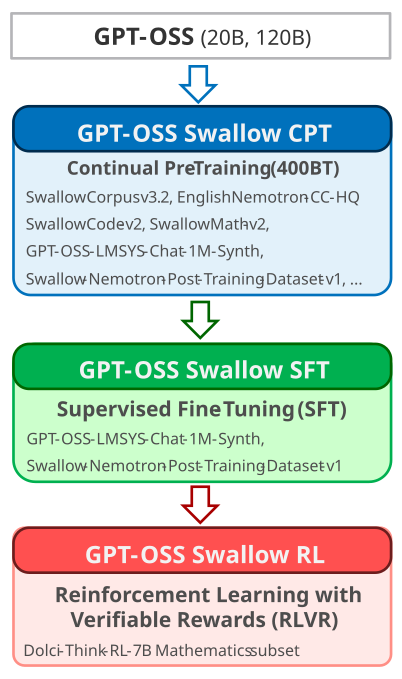

February 20, 2026
GPT-OSS Swallow
GPT-OSS Swallow is a reasoning LLM (20B, 120B) that enhances the Japanese language capabilities and reasoning abilities of OpenAI GPT-OSS. The model parameters (weights) are released under the Apache 2.0 license. GPT-OSS Swallow was developed by the Okazaki Laboratory and the Yokota Laboratory at Institute of Science Tokyo and the National Institute of Advanced Industrial Science and Technology (AIST).

Features
Powerful Reasoning LLM
The 20B and 120B models have achieved state-of-the-art performance among open LLMs of comparable or smaller size (as of February 2026).
Open LLM
Because the model weights are publicly available, it can be deployed in on-premise environments without concerns about information leakage and can be fine-tuned for specific tasks/domains.
A Recipe Specialized for Reasoning Models
To enhance reasoning capabilities, we redesigned the entire training recipe of continual pre-training, supervised fine-tuning, and reinforcement learning.
Permissive License
To adopt the Apache 2.0 license, which allows free use for both commercial and research purposes, we carefully curated and rebuilt the training data.
Latest Reasoning LLMs
Models
Please use reasoning mode set to 'medium'
History
- 2026-02-20: Initial version (v0.1) released.
Performance
20B Model
We compared the performance of GPT-OSS Swallow 20B RL with the following LLMs. Evaluation was conducted using the LLM evaluation framework swallow-evaluation-instruct. The results are also available on the Swallow LLM Leaderboard v2 (you can add other LLMs for comparison).
- Gemma 3 27B IT (a slightly larger model, non-reasoning model)
- Qwen3-14B (a reasoning model of similar scale, reasoning mode enabled)
- gpt-oss-20b (base model for continued training, reasoning level set to medium)
- gpt-oss-120b (a larger-scale model, reasoning level set to medium)
The average score of GPT-OSS Swallow 20B on Japanese tasks is 0.606, achieving the highest performance among open LLMs with 20B parameters or fewer. Compared to the base model gpt-oss-20b, performance improved on almost all tasks (with only a slight decrease within the margin of error on the coding benchmark JHumanEval). In particular, on JamC-QA, which measures knowledge related to Japan, a significant improvement of +13.0 points was achieved, demonstrating the effectiveness of training on Japanese data. Furthermore, on the Japanese GPQA benchmark designed for reasoning models, a +4.2 point improvement was observed, indicating enhanced reasoning capability. Although not shown in the graph, the average score on Japanese MT-Bench is 0.872, demonstrating very strong dialogue capability for a model of this size.
The average score of GPT-OSS Swallow 20B on English tasks is 0.788, again achieving the highest performance among open LLMs with 20B parameters or fewer. Compared to the base gpt-oss-20b, some tasks show improvements while others show slight declines. Notably, on the American Invitational Mathematics Examination (AIME 24-25), the model achieved a substantial improvement of +23.3 points.
120B Model
We compared the performance of GPT-OSS Swallow 120B with the following LLMs. Evaluation was conducted using the large language model evaluation framework swallow-evaluation-instruct. The results are also available on the Swallow LLM Leaderboard v2 (you can add other LLMs for comparison).
- Qwen3-Next-80B-A3B-Thinking (a reasoning model of similar scale, deep reasoning enabled)
- gpt-oss-120b (base model for continued training, deep reasoning level set to medium)
- Qwen3-235B-A22B-Thinking-2507 (a larger-scale reasoning model, deep reasoning enabled)
- GPT-5 mini (gpt-5-mini-2025-08-07) (a current commercial model with comparable performance, deep reasoning level set to medium)
The average score of GPT-OSS Swallow 120B on Japanese tasks is 0.642, achieving the highest performance among open LLMs with 120B parameters or fewer. Compared to the base model gpt-oss-120b, performance improved on almost all tasks (with only a slight decrease on MATH-100, differing by just one correct answer). In particular, on JamC-QA, which measures knowledge related to Japan, a significant improvement of +11.4 points was achieved, demonstrating the effectiveness of training on Japanese data. Moreover, strong results on reasoning-oriented benchmarks such as Japanese GPQA and MATH-100 indicate that the model possesses high reasoning capability.
Although not shown here, the average score on Japanese MT-Bench reached 0.916, tying for the highest score among all LLMs evaluated by the Swallow team to date (Qwen3-Next-80B-A3B-Instruct achieved the same score). This score surpasses GPT-5.1 Thinking (gpt-5.1-2025-11-13) at 0.897 and Gemini 3 Pro Preview (gemini-3-pro-preview) at 0.906, making it increasingly difficult to distinguish between top LLMs on Japanese MT-Bench.
The average score of GPT-OSS Swallow 120B on English tasks is 0.804, again achieving the highest performance among open LLMs with 120B parameters or fewer. Compared to the base gpt-oss-120b, some tasks improved while others declined. Notably, on the American Invitational Mathematics Examination (AIME 24-25), the model achieved a +15.0 point improvement. On the other hand, a decline of −8.6 points was observed on GPQA. Investigating the cause of this degradation remains future work (it may be related to the evaluation setting using greedy decoding).
Method

GPT-OSS Swallow is built in three stages starting from OpenAI GPT-OSS 20B and 120B: Continual Pre-Training (CPT), Supervised Fine-Tuning (SFT), and Reinforcement Learning (RL). We release GPT-OSS Swallow RL, which has gone through all three stages, as the full version. In addition, GPT-OSS Swallow SFT (prior to reinforcement learning) is released as an experimental version. Since GPT-OSS does not provide a post-training-free checkpoint (i.e., a pure pre-trained model), we perform continual pre-training on top of the already post-trained model.
In LLM development, which requires substantial computational resources, improving training efficiency is key to accelerating recipe exploration and ultimately impacts both performance and cost. In this model, we leveraged our accumulated expertise in low-precision training and distributed parallel training (Fujii+ 2024a, 2024b) to optimize computational efficiency. Specifically, in continual pre-training, we adopted Per-Block Scaling instead of the conventional Per-Tensor Scaling (Micikevicius+, 2022), and executed Linear layer computations using FP8 (E4M3) GEMM on Hopper-generation GPUs, achieving a 20% speedup. For details on the libraries, acceleration techniques, and hyperparameters used to develop GPT-OSS Swallow, please refer to our blog post.
Continual Pre-Training (CPT)
In continual pre-training (Fujii+, 2024), we aimed to enhance GPT-OSS’s knowledge related to Japan and its dialogue capability in Japanese, while maintaining or improving its advanced reasoning abilities in English, mathematics, science, and programming. The total size of the continual pre-training corpus is 400B tokens, with a balanced mixture of Japanese, English, mathematics, and coding data.
Nearly half of the training data consists of the latest version (v3.2) of the Swallow Corpus (Okazaki+, 2024), a large-scale Japanese web text corpus. This corpus was constructed by extracting Japanese web pages from Common Crawl snapshots crawled up to March 2025, followed by deduplication and quality filtering. For quality filtering, we newly developed an n-gram-based classifier distilled from GPT-OSS Safeguard 120B.
Additional Japanese data includes question–answer pairs synthesized from the Swallow Corpus and Japanese Wikipedia. For English data, we used Nemotron-CC high quality actual (Su+, 2025), Cosmopedia, and English Wikipedia. To improve translation capability, we incorporated parallel corpora including Laboro ParaCorpus and kaken-trans-ja-en. For mathematics and coding data, we used SwallowMath-v2 and SwallowCode-v2 (Fujii+, 2026), newly developed within the Swallow project.
To preserve the original model’s dialogue and reasoning capabilities while enhancing the effectiveness of SFT and RL, we incorporated post-training data containing reasoning processes into the pre-training stage. For instruction-tuning data, we used GPT-OSS-LMSYS-Chat-1M-Synth, which synthesizes reasoning traces and responses in both Japanese and English using GPT-OSS based on LMSYS-Chat-1M. For instruction–response and reasoning data in the domains of mathematics, science, and code generation, we used Swallow-Nemotron-Post-Training-Dataset-v1, which augments Nemotron-Post-Training-Dataset-v1 with synthesized reasoning traces and responses generated by GPT-OSS.
Supervised Fine-Tuning (SFT)
Since post-training data is already incorporated during continual pre-training, the CPT model is capable of dialogue and deep reasoning. However, to further improve general dialogue capability and overall performance, we conducted supervised fine-tuning (SFT). After extensive experimentation, we adopted GPT-OSS-LMSYS-Chat-1M-Synth and Swallow-Nemotron-Post-Training-Dataset-v1, which were also used during continual pre-training.
Reinforcement Learning (RL)
To further improve performance on tasks requiring deep reasoning—such as scientific question answering (GPQA), mathematics (AIME), and code generation (LiveCodeBench)—we applied reinforcement learning. As the learning algorithm, we adopted Group Relative Policy Optimization (GRPO) enhanced with Clip-Higher and Dynamic Sampling (Yu+ 2025), Truncated Importance Sampling (TIS) (Yao+ 2025), removal of the KL loss term, and Routing Replay (Zheng+ 2025), which aligns MoE experts between training and inference.
For training data, we used a mathematics subset of Dolci-Think-RL-7B for which we independently verified the absence of licensing issues. As the reward signal, we used the correctness of the final answer. This corresponds to Reinforcement Learning with Verifiable Rewards (RLVR).
Publications
- Kazuki Fujii, Taishi Nakamura, Mengsay Loem, Hiroki Iida, Masanari Ohi, Kakeru Hattori, Hirai Shota, Sakae Mizuki, Rio Yokota, and Naoaki Okazaki. 2024. Continual Pre-Training for Cross-Lingual LLM Adaptation: Enhancing Japanese Language Capabilities. In Proceedings of the First Conference on Language Modeling (COLM), October 2024.
- Kazuki Fujii, Kohei Watanabe, and Rio Yokota. 2024. Accelerating Large Language Model Training with 4D Parallelism and Memory Consumption Estimator. arXiv:2411.06465.
- Kazuki Fujii, Taishi Nakamura, and Rio Yokota. 2024. Balancing Speed and Stability: The Trade-offs of FP8 vs. BF16 Training in LLMs. arXiv:2411.08719.
- Kazuki Fujii, Yukito Tajima, Sakae Mizuki, Masaki Kawamura, Hinari Shimada, Taihei Shiotani, Koshiro Saito, Masanari Oi, Taishi Nakamura, Takumi Okamoto, Shigeki Ishida, Kakeru Hattori, Youmi Ma, Hiroya Takamura, Rio Yokota, Jun Sakuma, and Naoaki Okazaki. 2026. Rewriting Pre-Training Data Boosts LLM Performance in Math and Code. In The Fourteenth International Conference on Learning Representations (ICLR), April 2026.
- Youmi Ma, Sakae Mizuki, Kazuki Fujii, Taishi Nakamura, Masanari Ohi, Hinari Shimada, Taihei Shiotani, Koshiro Saito, Koki Maeda, Kakeru Hattori, Takumi Okamoto, Shigeki Ishida, Rio Yokota, Hiroya Takamura, and Naoaki Okazaki. 2025. Building Instruction-Tuning Datasets from Human-Written Instructions with Open-Weight Large Language Models. In Proceedings of the Second Conference on Language Modeling (COLM), October 2025.
- Daisuke Nohara, Taishi Nakamura, and Rio Yokota. 2026. On the Optimal Reasoning Length for RL-Trained Language Models. arXiv:2602.09591.
- Naoaki Okazaki, Kakeru Hattori, Hirai Shota, Hiroki Iida, Masanari Ohi, Kazuki Fujii, Taishi Nakamura, Mengsay Loem, Rio Yokota, and Sakae Mizuki. 2024. Building a Large Japanese Web Corpus for Large Language Models. In Proceedings of the First Conference on Language Modeling (COLM), October 2024.
References
- Paulius Micikevicius, Dusan Stosic, Neil Burgess, Marius Cornea, Pradeep Dubey, Richard Grisenthwaite, Sangwon Ha, Alexander Heinecke, Patrick Judd, John Kamalu, Naveen Mellempudi, Stuart Oberman, Mohammad Shoeybi, Michael Siu, and Hao Wu. 2022. FP8 Formats for Deep Learning. arXiv:2209.05433.
- Feng Yao, Liyuan Liu, Dinghuai Zhang, Chengyu Dong, Jingbo Shang, Jianfeng Gao. 2025. Your Efficient RL Framework Secretly Brings You Off-Policy RL Training. Feng Yao’s Notion. August 2025.
- Qiying Yu, Zheng Zhang, Ruofei Zhu, Yufeng Yuan, Xiaochen Zuo, YuYue, Weinan Dai, Tiantian Fan, Gaohong Liu, Juncai Liu, LingJun Liu, Xin Liu, Haibin Lin, Zhiqi Lin, Bole Ma, Guangming Sheng, Yuxuan Tong, Chi Zhang, Mofan Zhang, Ru Zhang, Wang Zhang, Hang Zhu, Jinhua Zhu, Jiaze Chen, Jiangjie Chen, Chengyi Wang, Hongli Yu, Yuxuan Song, Xiangpeng Wei, Hao Zhou, Jingjing Liu, Wei-Ying Ma, Ya-Qin Zhang, Lin Yan, Yonghui Wu, Mingxuan Wang. 2025. DAPO: An Open-Source LLM Reinforcement Learning System at Scale. In Thirty-Ninth Annual Conference on Neural Information Processing Systems (NeurIPS). December 2025.
- Chujie Zheng, Shixuan Liu, Mingze Li, Xiong-Hui Chen, Bowen Yu, Chang Gao, Kai Dang, Yuqiong Liu, Rui Men, An Yang, Jingren Zhou, Junyang Lin. Group Sequence Policy Optimization. arXiv:2507.18071, July 2025.
Acknowledgements
The research and development of the large language model Swallow was supported by the AIST policy budget project “Research and Development of Generative AI Foundation Models for the Physical Domain,” the MEXT-funded project “Establishment of a Research and Development Hub for Ensuring Transparency and Trustworthiness of Generative AI Models,” JSPS KAKENHI Grant Number 25H01137, and other supporting programs. We also utilized ABCI 3.0 provided by AIST and AIST Solutions under the “ABCI 3.0 Development Acceleration Program.” In addition, we used the TSUBAME 4.0 supercomputer at Institute of Science Tokyo.